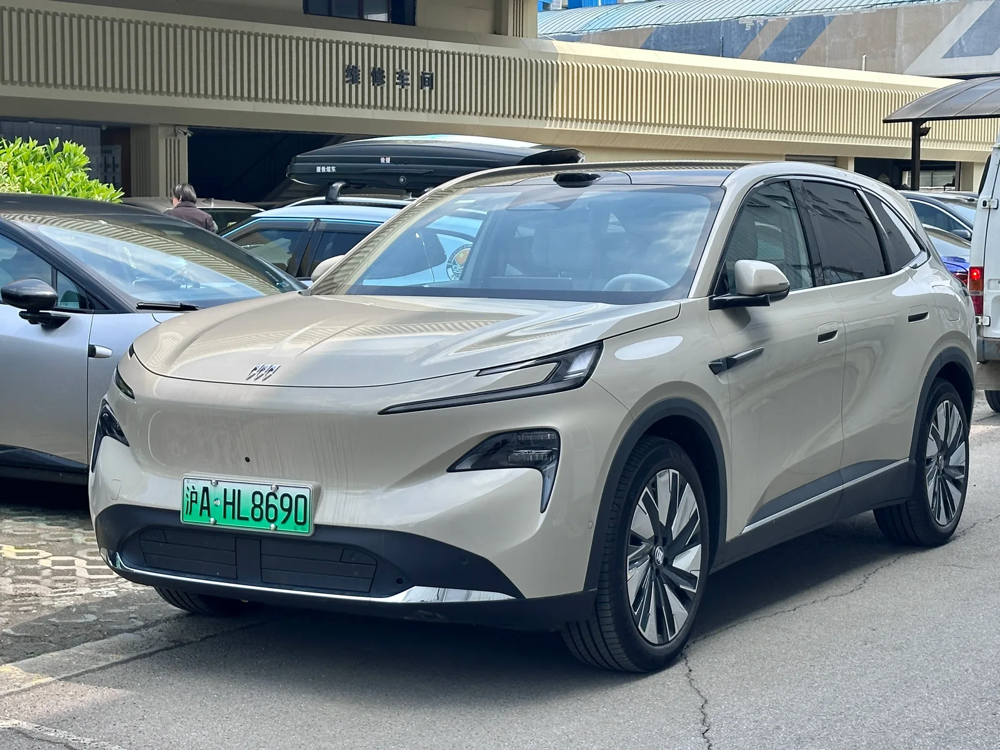
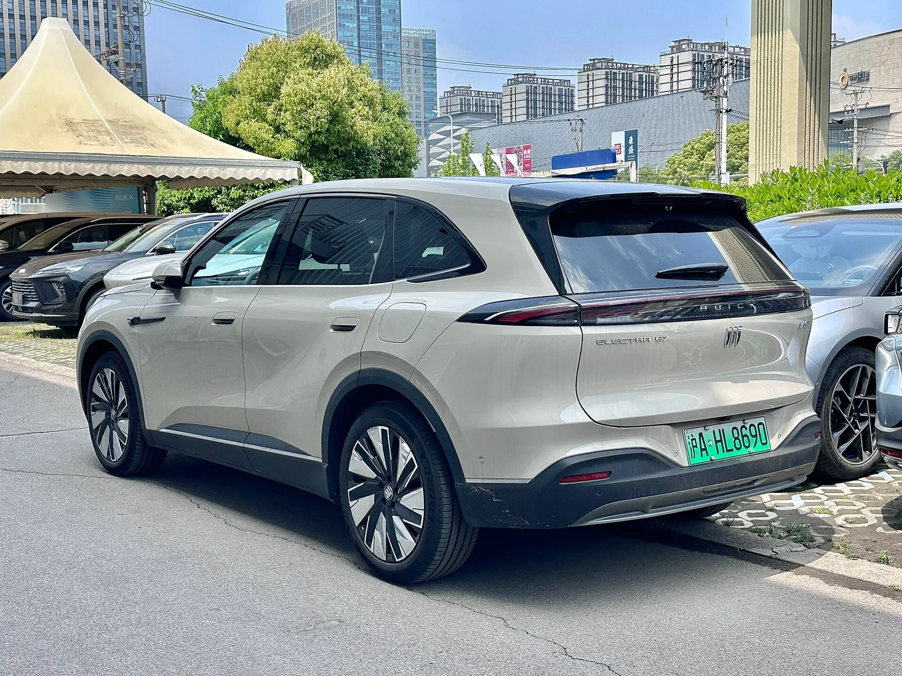
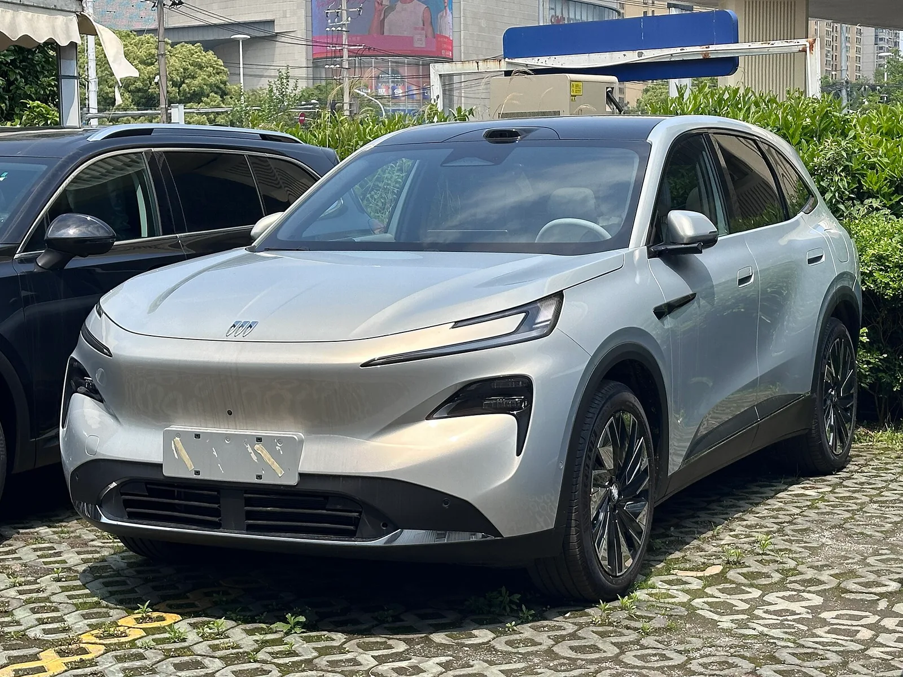
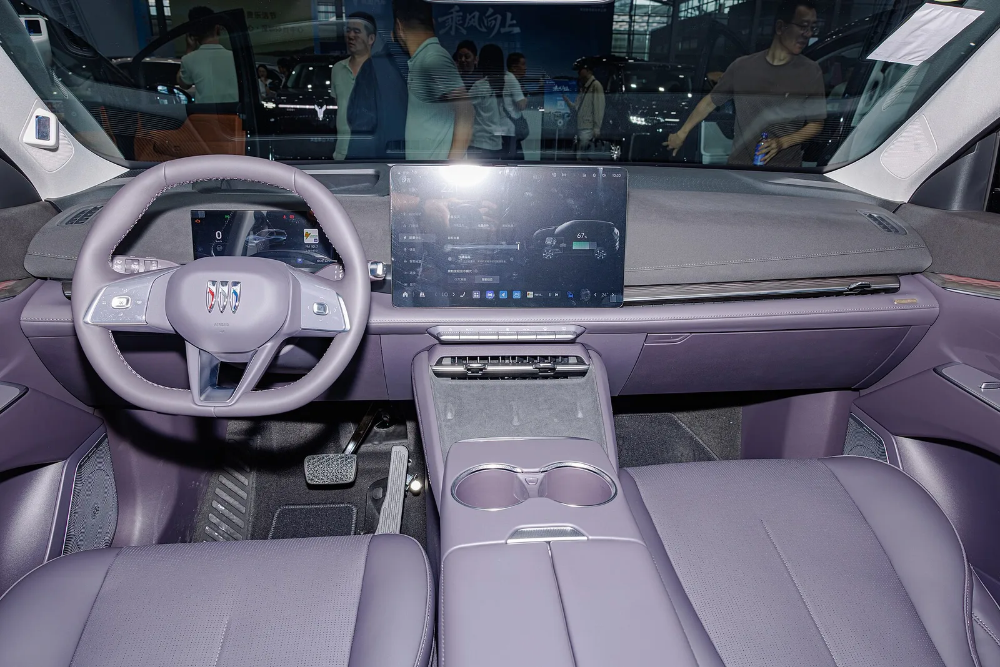

▲ 뷰익 엘렉트라 E7의 중국 시장 양산차 모습. 국내에서는 위장막을 씌운 테스트카가 서울 도심에서 포착됐다 ⓒ Dinkun Chen, Wikimedia Commons (CC BY-SA 4.0)
1. 위장막 벗고 서울을 달렸다 — 지피코리아 단독 포착
자동차 전문 매체 지피코리아는 최근 GM 뷰익의 중형 SUV '엘렉트라 E7'이 서울 도심에서 위장막을 벗은 채 테스트 중인 모습을 단독으로 포착해 보도했다. 지피코리아는 해당 기사에서 "위장막 벗고 테스트"라는 표현으로 이 차량의 국내 출시가 임박했을 가능성을 짚었다. 기사에 따르면 테스트 차량에는 뷰익 로고와 '엘렉트라 E7' 레터링이 선명하게 부착돼 있어, 차종을 숨기려는 의도 없이 공개적으로 도로를 주행한 것으로 보인다.
지피코리아 원문 기사에서 확인 가능위장막을 이미 제거한 상태에서 실도로 테스트에 나섰다는 점은 업계에서 통상 출시 시점이 가까워졌다는 신호로 해석된다. 완전히 새로운 차종을 은밀히 감춰야 하는 초기 개발 단계와 달리, 디자인이 확정되고 양산을 앞둔 인증·적합성 테스트 단계에서는 오히려 위장막 없이 도로 주행 데이터를 수집하는 경우가 많기 때문이다.
2. 디자인·외관 특징 — 중형 SUV 체격에 PHEV 특유의 실내 활용성

▲ 엘렉트라 E7의 측면. 완만하게 떨어지는 루프라인과 크롬 대신 블랙 가니시로 마감한 벨트라인이 특징이다 ⓒ JustAnotherCarDesigner, Wikimedia Commons (CC0)
지피코리아 보도에 따르면 엘렉트라 E7의 차체 크기는 전장 4850mm, 전폭 1910mm, 전고 1676mm, 휠베이스 2850mm이며, 공차중량은 사양에 따라 약 1850~1995kg 수준이다. 이는 현대 싼타페(전장 4830mm)나 기아 쏘렌토와 거의 동급인 중형 SUV 체급으로, 지피코리아는 이 차량이 "PHEV 특유의 실내 공간 활용성을 강조했다"고 평가했다.
디자인적으로는 뷰익이 최근 전동화 라인업 전반에 적용 중인 '일렉트라' 패밀리룩을 따른다. 좌우로 넓게 이어지는 슬림한 헤드램프와 그 아래 배치된 별도의 주간주행등 겸 방향지시등, 크롬을 최소화하고 보디컬러를 강조한 그릴 마감이 특징이다. 후면부에는 차체 폭 전체를 가로지르는 리어 콤비네이션 램프와 'ELECTRA E7' 레터링이 배치됐다.

▲ 엘렉트라 E7의 후면. 차체 폭을 가로지르는 일체형 테일램프와 'ELECTRA E7' 레터링이 뷰익의 최신 전동화 디자인 언어를 보여준다 ⓒ Dinkun Chen, Wikimedia Commons (CC BY-SA 4.0)
실내는 운전석 클러스터와 센터 인포테인먼트를 아우르는 커브드 듀얼 디스플레이 구성이 적용됐고, 물리 버튼을 최소화한 미니멀한 대시보드 레이아웃을 갖췄다. 뷰익 특유의 삼각 방패 엠블럼이 스티어링 휠 중앙에 자리했다.

▲ 엘렉트라 E7의 실내. 운전석 클러스터와 센터 디스플레이를 아우르는 커브드 듀얼 스크린이 눈에 띈다 ⓒ Dinkun Chen, Wikimedia Commons (CC BY-SA 4.0)
3. 파워트레인·주행거리 — 1.5T+모터 EREV, 전기만으로 210km
엘렉트라 E7은 SAIC-GM이 개발한 신형 '전룡(眞龍) Pro' 하이브리드 시스템을 탑재한다. 지피코리아는 국내에 먼저 들어올 가능성이 높은 사양으로 EREV(주행거리 연장형 전기차) 방식을 지목했는데, 224마력급 구동모터와 31.7kWh LFP 배터리를 결합해 전기 모드만으로 CLTC 기준 약 210km를 달릴 수 있고, 전체 주행거리는 약 1600km에 이른다고 전했다.
중국 현지에 출시된 양산 사양 기준으로는 다소 차이가 있다. 1.5리터 전용 하이브리드 터보 엔진(115kW·154마력, 230Nm)과 165kW(221마력)급 구동모터, 32.6kWh LFP 배터리를 결합해 시스템 총출력 280kW(375마력)를 내며, CLTC 기준 순수 전기 주행거리 235km, 복합 주행거리 최대 1630km를 인증받았다. 국내 투입 시에는 배터리 용량이나 세부 출력이 현지화 과정에서 조정될 가능성이 있다.
| 구분 | 지피코리아 보도(국내 예상) | 중국 양산 사양 |
|---|---|---|
| 구동모터 | 224마력 | 165kW(221마력) |
| 배터리 | 31.7kWh LFP | 32.6kWh LFP |
| 전기 주행거리(CLTC) | 약 210km | 235km |
| 총 주행거리(CLTC) | 약 1600km | 최대 1630km |
| 엔진 | 1.5L 하이브리드 전용 | 1.5T, 115kW(154마력) |
참고 엘렉트라 E7은 중국에서 2026년 4월 22일 출시돼 3,400만원대(2만3,200달러)부터 판매되고 있으며, 출시 첫 달에 1만 대 이상 계약되는 등 SAIC-GM 합작 브랜드 중 가장 빠른 흥행 속도를 기록했다. 다만 국내 출시 시 정확한 트림 구성과 가격은 별도로 확정돼야 한다.
4. GM·뷰익의 국내 전략적 배경 — 왜 지금 뷰익인가
이번 포착이 주목받는 이유는 단순한 스파이샷 이상의 맥락이 있기 때문이다. GM 한국사업장(한국GM)은 2025년 말 진행한 '2026 비즈니스 전략 컨퍼런스'에서 뷰익 브랜드를 국내에 공식 도입하겠다고 발표했다. 2026년 안에 뷰익 브랜드를 정식 론칭하고 신차 최소 1종을 출시하겠다는 계획도 이미 확정된 상태다.
현재로선 국내 부평공장에서 생산되는 소형 SUV 엔비스타가 뷰익 브랜드의 1호 출시 차종으로 가장 유력하게 거론된다. 그러나 해외 매체 GM오소리티는 SAIC-GM 합작법인이 엘렉트라 E7을 뷰익 프리미엄 전동화 서브 브랜드 '일렉트라'의 국제 확장 선봉으로 앞세우고 있으며, 그 첫 해외 진출 시장으로 한국이 유력하게 거론되고 있다고 보도했다. 즉 엔비스타가 뷰익 브랜드의 문을 열고, 엘렉트라 E7이 뒤이어 투입되는 '투트랙' 시나리오가 유력하다는 뜻이다.
국내 시장 환경도 이 시나리오에 힘을 싣는다. 현재 국내 자동차 시장에서 가장 수요가 높은 차급이 중형 SUV이며, 고유가·충전 인프라 우려 속에 순수 전기차보다 하이브리드·PHEV에 대한 선호가 절대적으로 높다는 점을 감안하면, 전기 주행거리와 총 주행거리를 모두 확보한 엘렉트라 E7의 국내 도입 가능성은 충분히 현실적이라는 평가다.
5. 경쟁모델 대비 포지셔닝 — 아이오닉5·EV6와는 다른 길
엘렉트라 E7이 국내에 들어온다면, 흥미로운 점은 직접적인 경쟁 구도가 순수 전기 SUV인 아이오닉5·EV6와는 다르게 형성된다는 사실이다. 아이오닉5와 EV6는 완전한 배터리 전기차(BEV)로 1회 충전 주행거리가 국내 인증 기준 약 400km대에 머무는 반면, 엘렉트라 E7은 PHEV·EREV 방식이어서 전기 주행거리 자체는 짧지만 주유소에서 충전 없이도 1600km 안팎을 달릴 수 있다는 근본적인 차이가 있다. 충전 인프라 의존도를 낮추면서도 일상 주행 대부분을 전기로 소화할 수 있다는 점이 세일즈 포인트가 될 전망이다.
오히려 더 직접적인 경쟁 상대는 싼타페 하이브리드·쏘렌토 하이브리드처럼 같은 중형 SUV 체급의 하이브리드 모델이나, 국내 상륙을 준비 중인 다른 중국계 PHEV SUV가 될 가능성이 크다. 실제로 국내 매체 래디언스리포트는 엘렉트라 E7의 가격·주행거리 조합을 두고 "이 가격에 이 스펙이면 싼타페가 긴장한다"고 평가하기도 했다. 다만 뷰익이라는 브랜드 인지도, 사후관리(A/S) 네트워크, 국내 안전·환경 인증 통과 여부가 실제 흥행을 가를 변수로 남아 있다.
6. 출시 시점 전망 — 연말이 1차 분수령
체크포인트
- 지피코리아가 포착한 테스트카는 위장막이 없는 인증·적합성 테스트 단계로 추정되며, 이는 출시 임박 신호로 해석되지만 GM·한국GM의 공식 확인은 아직 없다.
- 파워트레인 수치는 지피코리아 보도치와 중국 양산차 사양이 다소 엇갈려, 국내 최종 사양은 별도로 확인해야 한다.
- 한국GM은 2026년 내 뷰익 브랜드 론칭과 신차 출시를 이미 공식화했으며, 1호 차종으로는 엔비스타가, 뒤이어 엘렉트라 E7이 투입되는 시나리오가 유력하다.
한국GM이 예고한 '2026년 내 뷰익 브랜드 론칭'이라는 시간표와, 위장막 없이 서울 도심을 주행 중인 이번 테스트카의 정황을 종합하면 연말이 1차 분수령이 될 가능성이 높다. 다만 정확한 출시 차종 순서, 최종 트림 구성, 가격은 한국GM의 공식 발표를 통해 확인해야 하는 부분으로 남아 있다. 새로운 정보가 확인되는 대로 다시 업데이트할 예정이다.